Mental maths that adapts to your child.
8ctoMath is arithmetic practice for children, set on the seabed. Every quiz is a race of thirty questions against Brainy the squid. The level follows your child on its own, the calculations they find hard come back more often, and a good run wins stickers.
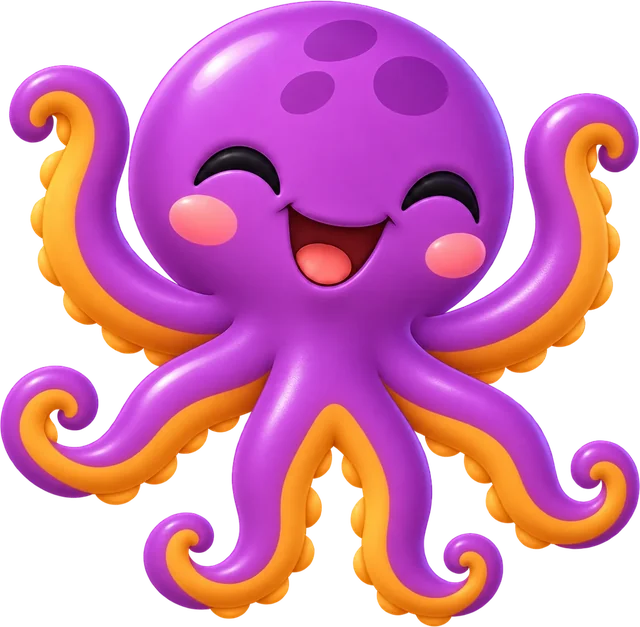
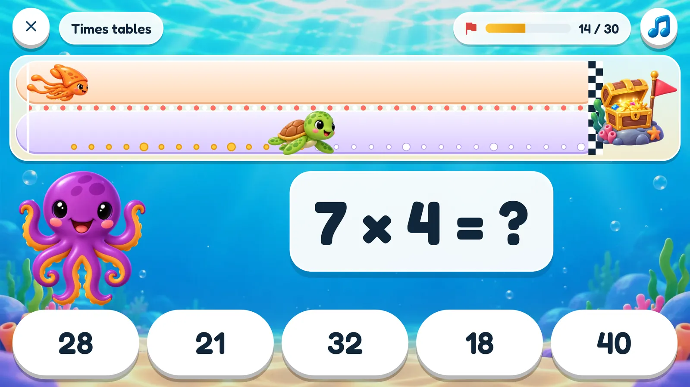
How a quiz goes
Thirty questions, one track along the seabed, a treasure chest at the end. Every right answer is a stroke forward, and Brainy the squid is swimming the same track.
A question comes up
From the kinds of calculation you chose, at the level this child is on.
Pick the answer
Five to choose from. The wrong ones are the mistakes children really make, so the right one has to be worked out, not guessed.
Swim ahead
Right, and your child's creature takes a stroke. Wrong, and the answer is shown before the next question.
Brainy is racing
He takes a little longer than this child usually needs, so beating him means a better run than usual.
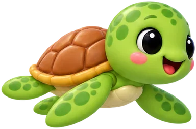
Your child
Swims as the creature they chose for themselves. One stroke for every right answer.
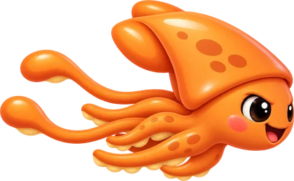
Brainy
Swims at a steady pace, set by this child's own last few quizzes.
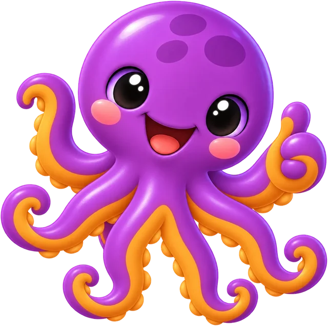
8cto is the trainer
He waits beside the question, cheers a right answer, takes a wrong one badly, and has a word with a child who has gone quiet. Out loud, in English or German.
Five kinds of calculation
Pick any mix before a quiz, one kind or all five. Each keeps its own level, so a child can be far along in adding and just starting on sharing.
Adding
up to 10, 20, 100 and on
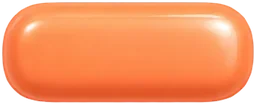
Taking away
never below zero
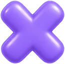
Times tables
tables up to 12
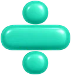
Sharing
always comes out exactly
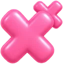
Big times
such as 14 × 7
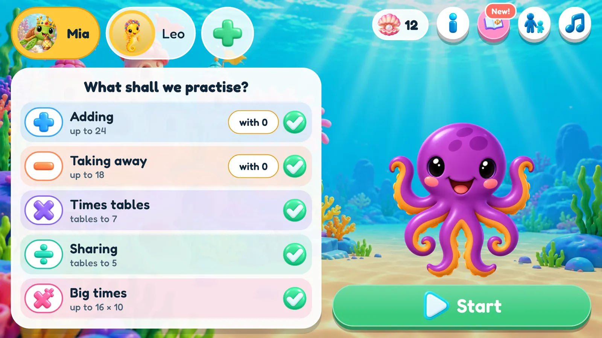
The level finds the child
Nobody has to guess which level is right, and nobody has to set one. The game watches how each quiz goes and adjusts, quietly, while the child just plays.
Always the right difficulty
Every kind of calculation has its own level. It steps up when your child gets them right and back down when they get too hard.
Tricky calculations come back
It remembers which calculations cause trouble and asks them more often, and the ones your child knows well less often.
No lucky guesses
The wrong answers on offer are the mistakes children really make, so the right one has to be worked out.
A fair race
Brainy takes a little longer than your child usually needs for a quiz, so beating him means being a bit quicker than usual. A quick child and a careful one both get a race they can win.
It starts in the right place, too
A new child gives a nickname and an age, and 8cto picks which calculations the first quiz asks and how big the numbers are. Within a quiz or two the levels have found the child. The age is used once and never stored.
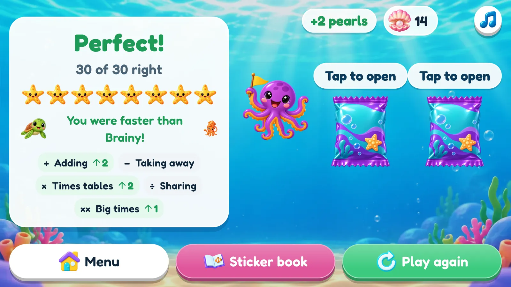
Worth swimming for
Three rewards, each meaning something different, and a shop to spend one of them in. None of them can be bought with money.
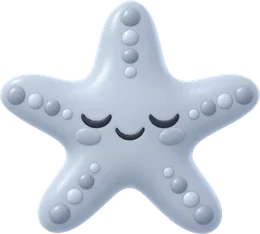
Eight starfish
One lights for every mark you pass, from half right all the way up to all thirty.
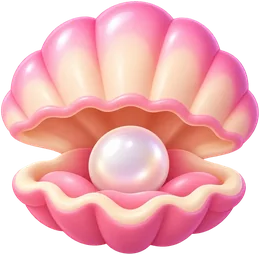
Pearls
One for a quiz with no mistakes, one for beating Brainy. Spend them in the sticker shop, or let a parent trade one in for a treat agreed on at home.
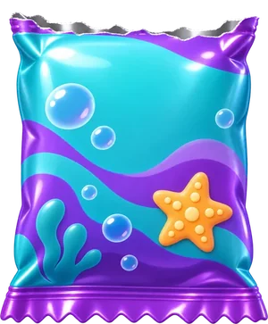
Stickers
No mistakes: two stickers. One mistake: still one. About one sticker in twenty is a rare one.
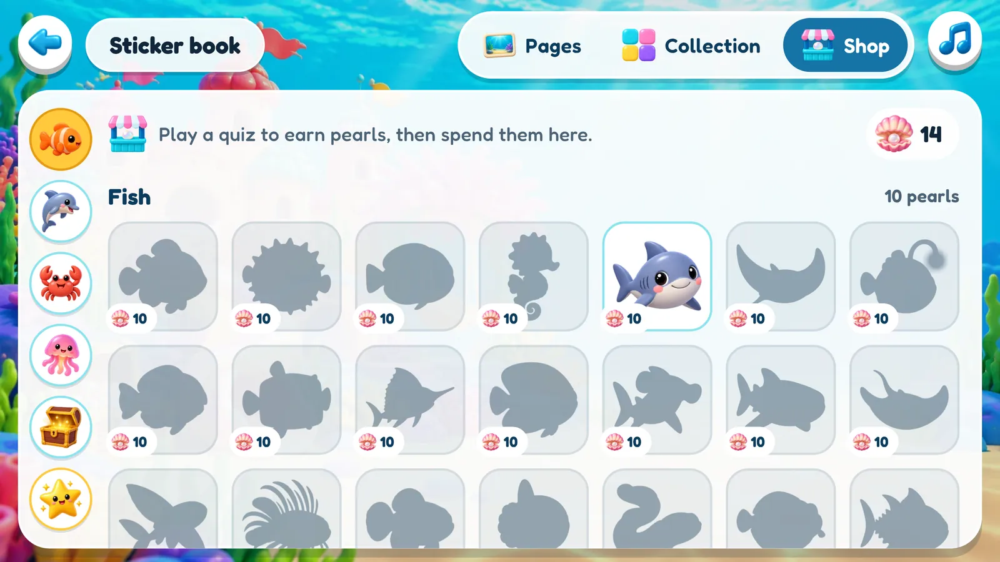
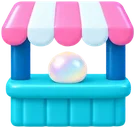
The sticker shop
Pearls buy exactly the sticker your child has their eye on, a rare one for a good deal more. Every sticker stays a silhouette until it is theirs, so there is always something to save up for.
Two hundred stickers, eight pages
Stickers are the collection. Drag one onto a page, turn it, flip it, make it bigger, take the whole page full screen. The page belongs to the child, and it stays as they left it.
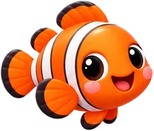
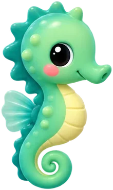
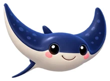
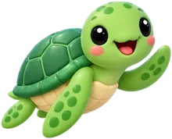
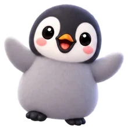
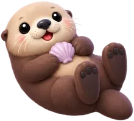
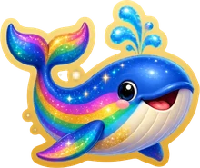
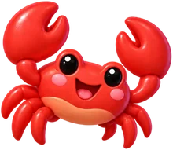
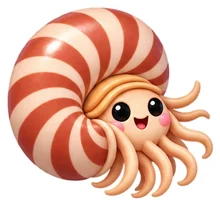
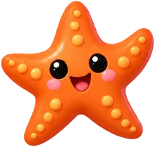
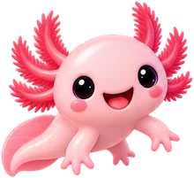
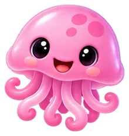
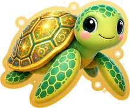
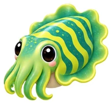
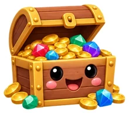
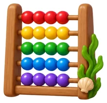
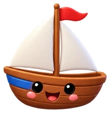
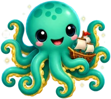
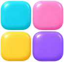
Five families
Fish · flippers & feathers · claws, shells & stars · squishy & glowing · treasures & things. Thirty-six in each, and the collection counts your doubles.
Twenty rares
A golden turtle, a baby kraken, a rainbow whale, a mermaid. With 8ctoMath+, about one earned sticker in twenty comes from this set.
Sisters and brothers
Children on the same device can send each other stickers. A double, or the one the other has been hunting for.
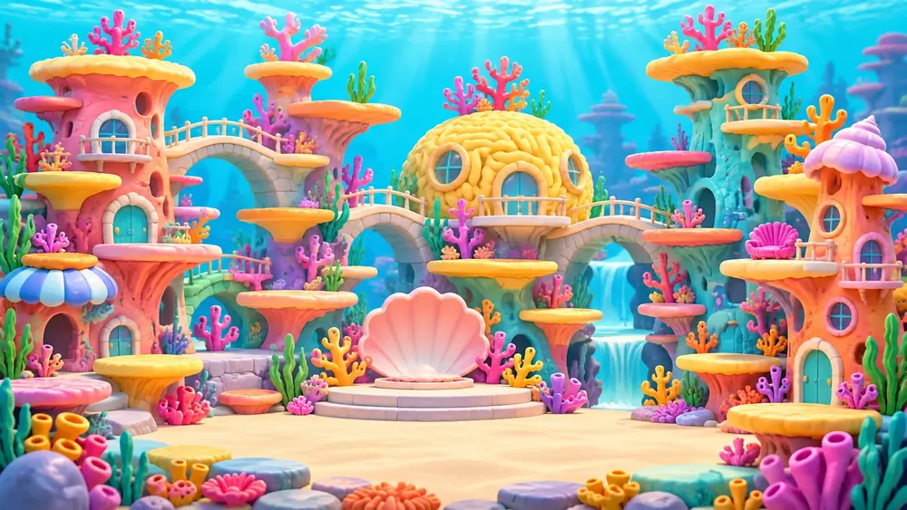
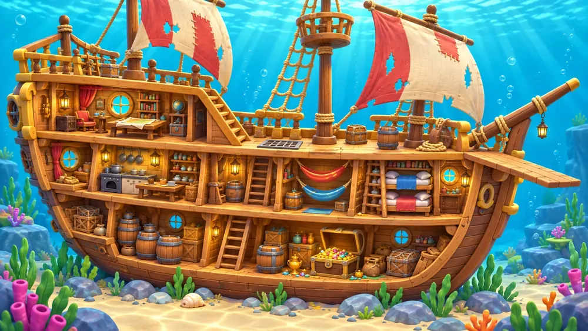
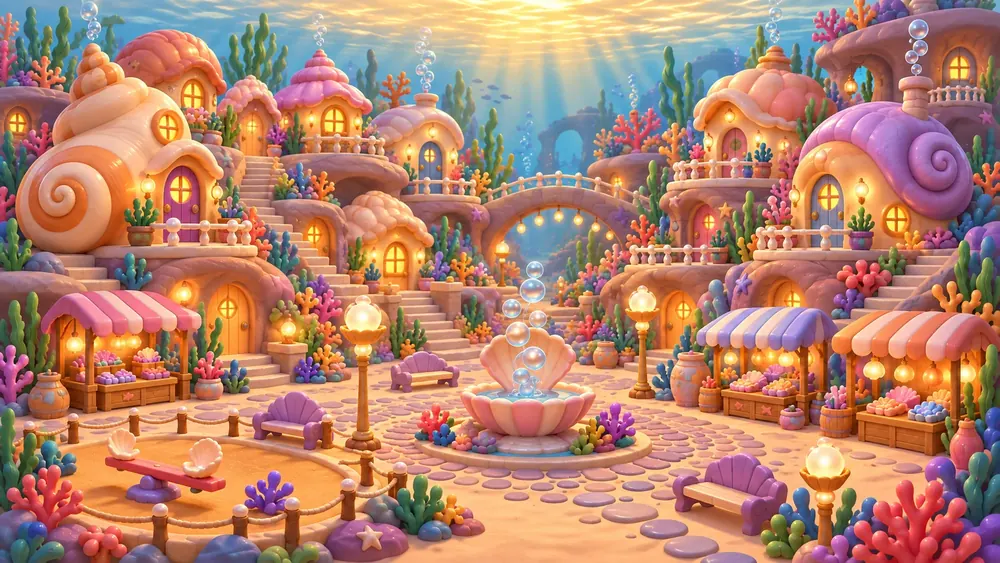
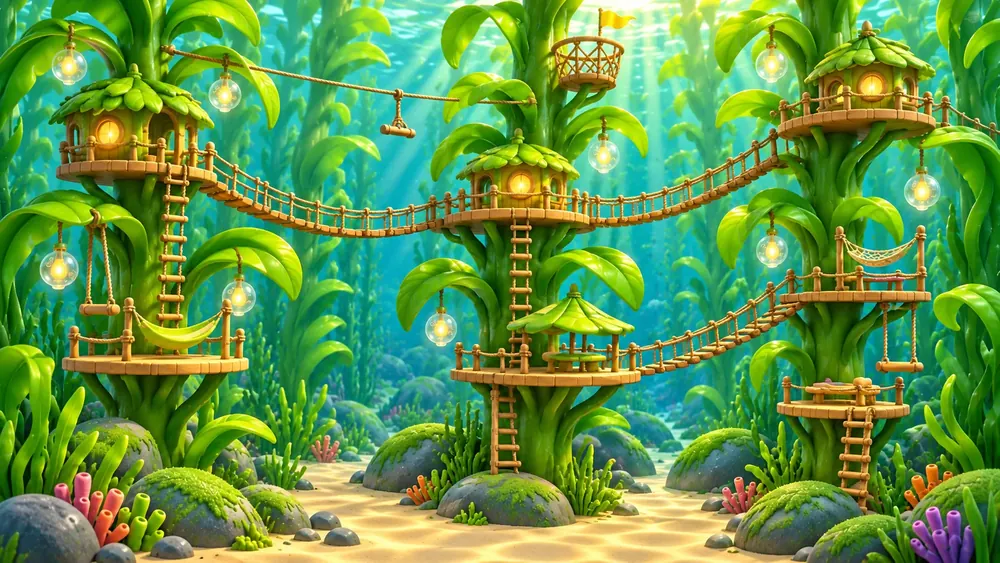
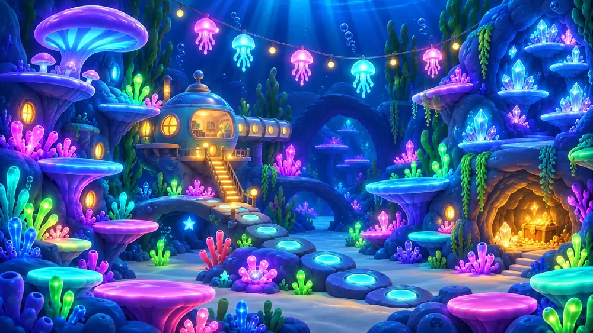
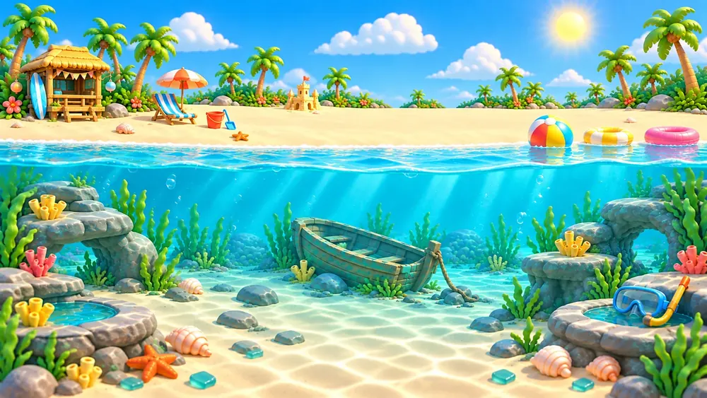
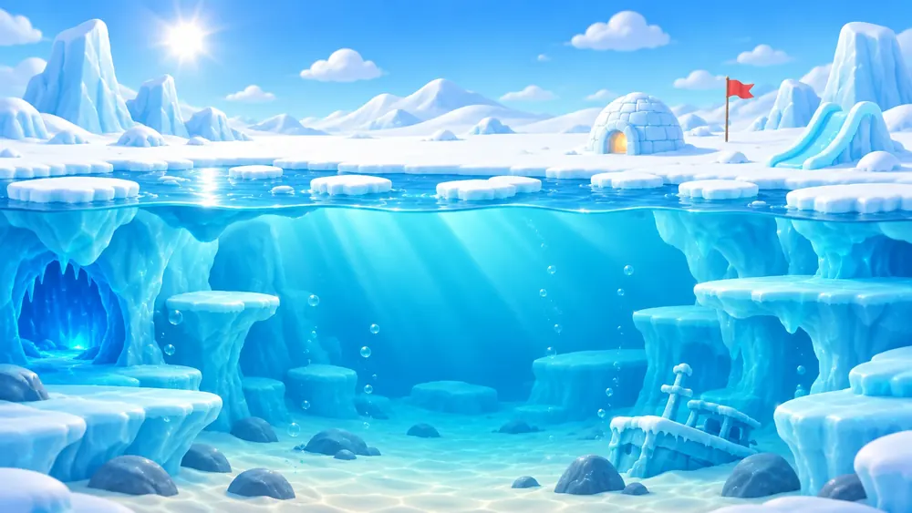
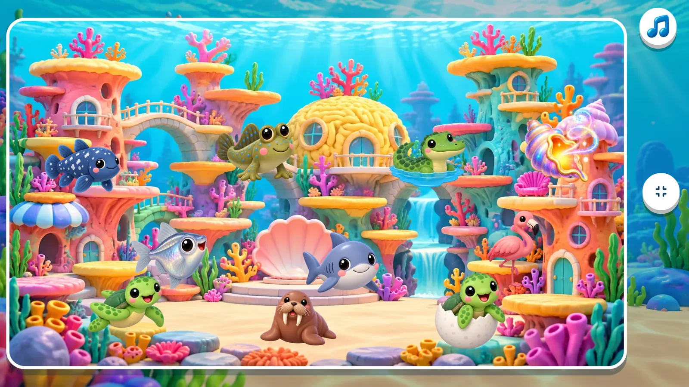
Be your own creature
Every child builds a picture of their own: a sea creature, a hat, a thing to hold, a backdrop and a ring colour. It sits on their button on the menu, and it is who swims the race.
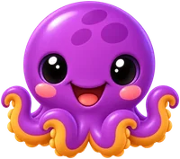
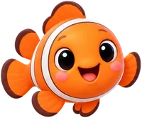
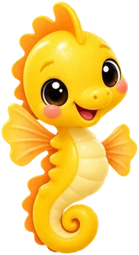
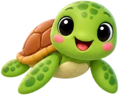
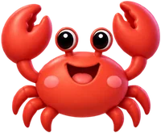
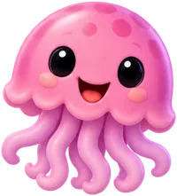
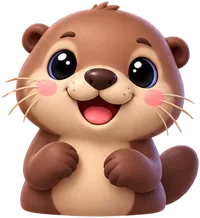
Twenty creatures
A clownfish, a seahorse, an otter, a shark, a walrus, an axolotl. Even 8cto. Nine hats, nine things, nine backdrops, and a "surprise me" for the undecided.
Rare stickers open rare faces
Own the golden turtle sticker and you can be the golden turtle. Twenty portraits, one for each rare sticker, and only the sticker opens them.
Race as yourself
The creature a child chose is the one in the water against Brainy, stroke for stroke, while 8cto trains from the side.
8cto and Brainy speak
The characters move, and they talk. 8cto cheers a right answer, takes a wrong one badly, and has a word with a child who has gone quiet. Brainy crows or sulks at the finish. Real voices, in English or in German.
Voices
Dozens of lines, so it takes a while before your child has heard them all.
Music and sounds
An original tune written for the game, and a music button on every screen. Sound effects switch off separately.
Calm motion
Fewer animations, for children who find movement distracting. The characters stay; the flourishes go.
Made for tablets
Landscape, big buttons, and an on-screen letter pad for the nickname instead of the system keyboard. Happy on a phone too.
For parents
Everything grown-up sits behind a small gate: a number written out in words, to be typed in digits. Easy for you, dull for a six-year-old.
Up to six children
One device, one family. Each child has their own levels, pearls, stickers and picture.
A PIN for each child
Four digits a child can choose, so nobody else plays as them. Forgotten? You take it off.
The last seven days
Questions answered, mistakes made and days played, per child. Numbers, not badges.
Levels by hand
They move themselves, but if one is plainly too easy or too hard you can set it yourself.
Trade in a pearl
Take a pearl off the pile when you hand over whatever it was worth at home.
English or Deutsch
Follows the device, or pick one. The whole app, the voices included, in either language.
Nothing leaves the device
8ctoMath is for children, so it collects nothing. It is a whole game with the aeroplane mode switch on.
- ✓No advertising, and nothing a child can buy. The one purchase sits behind the grown-ups' gate.
- ✓No analytics, no tracking, no advertising identifier, no crash reporting.
- ✓No permissions asked for: no camera, microphone, location, contacts, photos or files.
- ✓A nickname, not a name. No birthday, no email, no photo. The age you give is used once and never stored.
- ✓Plays offline and needs no account. Sync is optional, and its backup is kept in Switzerland.
- ✓Deleting a child, or everything, takes a few taps, and it is gone everywhere.
The full detail is in the privacy policy, and how to have data removed is in the data deletion policy.
The maths is free. The extras are one purchase.
The free version has all the maths: every kind of calculation, the race and the levels that follow your child are the same. 8ctoMath+ opens the rest of the collection. One purchase, no subscription, for every child on the device.
8ctoMath
The whole game, for up to six children.
- All five kinds of calculation, the race, and the levels that adapt
- Starfish, pearls, the sticker shop and gifts between children
- The first five stickers of each family
- Two pages of the sticker book: the coral reef and the shipwreck
- Five creatures, and a few hats, things and backdrops
- PINs, the parents' area, English and German
8ctoMath+
Everything in the free version, and the rest of the sea.
- All two hundred stickers, the twenty rare ones too
- All eight pages of the sticker book
- Every creature, hat, thing and backdrop
- Sync: a backup of the whole family, kept in step on every device signed in to the same account
- For every child on the device, and yours to keep
Bought through Google Play, behind the grown-ups' gate. What a child has earned is never taken away: a face they built and a page they have filled stay theirs.
Come and race Brainy.
8ctoMath is in testing for Android. Write if you would like to know when it lands on Google Play.